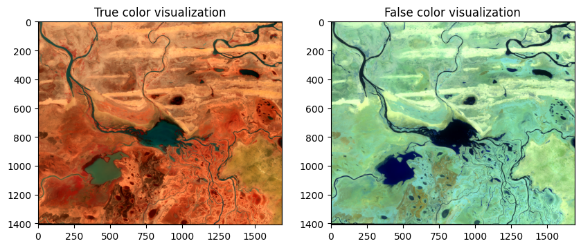

Read and show
import os
from pyrsimg import readTiff
from pyrsimg import imgShow, imsShow
import matplotlib.pyplot as plt
---------------------------------------------------------------------------
ZipImportError Traceback (most recent call last)
Cell In[1], line 2
1 import os
----> 2 from pyrsimg import readTiff
3 from pyrsimg import imgShow, imsShow
4 import matplotlib.pyplot as plt
File ~/miniconda3/envs/venv/lib/python3.11/site-packages/pyrsimg-1.0.0-py3.11.egg/pyrsimg/__init__.py:10
File <frozen zipimport>:195, in get_code(self, fullname)
File <frozen zipimport>:758, in _get_module_code(self, fullname)
File <frozen zipimport>:604, in _get_data(archive, toc_entry)
ZipImportError: bad local file header: '/Users/luo/miniconda3/envs/venv/lib/python3.11/site-packages/pyrsimg-1.0.0-py3.11.egg'
root_path = os.getcwd().split('pyrsimg')[0] + 'pyrsimg'
path_rsimg = root_path + '/docs/source/examples/data/l8_scene_05.tif'
Read the remote sensing image.
l8_img = readTiff(path_rsimg)
vars(l8_img).keys()
dict_keys(['geotrans', 'row', 'col', 'bands', 'espg_code', 'array'])
Show the single image.
fig, ax = plt.subplots(1, 1, figsize=(5,5))
imgShow(img=l8_img.array)
Show multiple images.
fig, ax = plt.subplots(1, 2, figsize=(10,4))
img_list= [l8_img.array, l8_img.array]
img_name_list = ['True color visualization', 'False color visualization']
clip_list = [2,2]
col_bands_list = [(3,2,1),(5,4,3)]
imsShow(img_list, img_name_list, clip_list, col_bands_list)
